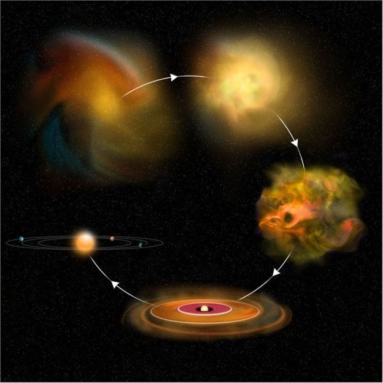
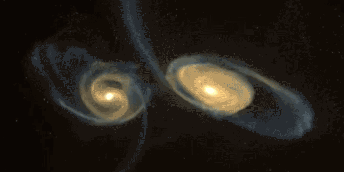
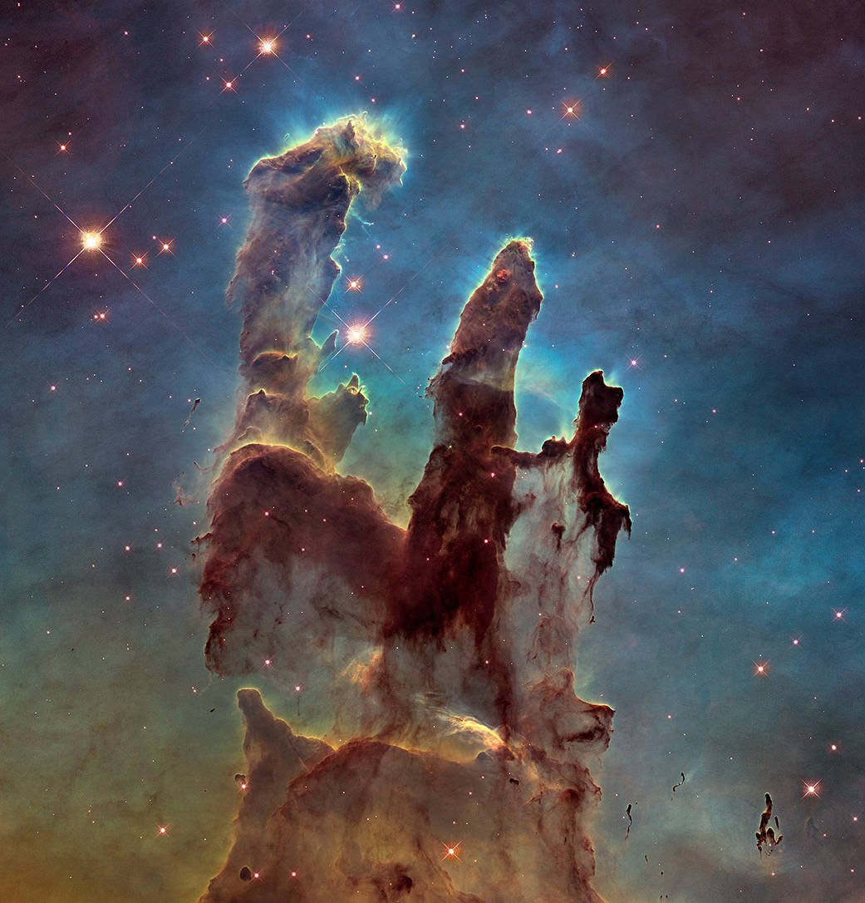

The birth of galaxies

Galaxy Origins

Galaxies are not scattered randomly throughout the universe, but are often found in
"clusters," which are in turn parts of larger groupings called "super-clusters." How did
these structures of the universe come about? Did the material that galaxies comprise come
together first, giving birth to stars, or did stars form first, gravitating toward one
another to form galaxies?
Astronomers in the latter half of the 20th century have made wondrous discoveries, expanding
our understanding of the universe and our vision beyond the visible portion of the
electromagnetic spectrum. Humanity's knowledge of how the cosmos was born and how its
many phenomena arise has grown exponentially in a period of time equivalent to just one
human lifetime. Nevertheless, despite these great strides, some fundamental questions remain
largely unanswered, chief among them, how did the first galaxies form?
Our understanding on the origin of the universe is hampered by the lack of direct observations.
In essence, astronomers are trying to put together a 10,000-piece puzzle from the dozen pieces
found underneath the table that were chewed on by the cat. Much as archaeologists do, astronomers
must peel away the strata of time to unearth clues to the birth of galaxies. As larger telescopes
are built to observe fainter and more distant galaxies, we can probe further back in time.
In recent years, astronomers have achieved great progress, peering farther out in space to
study objects that existed when the universe was still very young. But no one has yet seen an
epoch when galaxies did not exist. For that, we need to look back to a time when the universe
was only a few hundred million years old, and look at nascent galaxies.
Back to the Beginning

The theories of how it all started are based upon the scientific observations and reasearch
of some of the brightest minds, yet these theories should not be construed as fact. There could
be radical new developments that could dramatically change our understanding on the origins of
the universe.
Given the current knowledge of mankind, it seems fairly reasonable that there may have been a
Big Bang, the primeval explosion that brought all space and time, all matter and energy, into
being. For several hundred thousand years immediately thereafter, the universe was too hot for
elements to form, so it consisted of a mix of subatomic particles and radiation. As the universe
cooled to the point where the matter became transparent to the radiation, the first hydrogen and
helium atoms began to form. Images taken by NASA's Cosmic Background Explorer indicate that the
featureless sea of cosmic particles and radiation now showed the first signs of structure. Were
these subtle variations in an otherwise smooth universe the seeds that grew to form the first
galaxies? We do not know; and for now, we can only hypothesize.
Some astronomers believe the universe was built with small pieces, such as gas clouds and star
clusters, that merged over time to form galaxies and clusters of galaxies. Others theorize
that the early universe broke first into colossal clumps that contained enough building
materials to make structures on the grandest scale — great walls and sheets of millions of
galaxies — that fragmented into increasingly smaller gas and clouds, ultimately resulting in
individual galaxies.
In the first scenario, the Milky Way would have formed when star clusters merged to form the
galaxy's bulge, or core, which then accreted more gas and dust to form its flattened disk of
spiral arms. But, according to the second scenario, the Milky Way would have been born some
time after a huge region of gas and dust began to condense into our local group of galaxies.
Continued fragmentation would have produced increasingly smaller assemblies, finally spawning
individual galaxies such as our Milky Way and its neighbors, the Large and Small Magellanic Clouds.
When astronomers study the Milky Way, they can learn about the birth, life and death of its
stars because they see the stars at various evolutionary stages. Detailed studies of the ages
and chemical compositions of these stars suggest that the Milky Way has led a relatively quiet
existence, forming stars at a rate of a few suns per year for about the last 10 billion years.
But while these stars offer clues to the age of our galaxy, they present little evidence that
helps to explain how the Milky Way originally formed.
Beyond the Milky Way: Answers to Basic Questions

Looking beyond our galaxy with current telescopes, astronomers can study both middle-aged
and mature galaxies. When NASA's Hubble Space Telescope was pointed at one tiny speck of sky
for 10 days, the resulting image provided the most detailed view of the early universe ever
obtained. The image contains a bewildering assortment: 1,500 galaxies at various stages of
evolution, some dating back to the time when the universe was only a billion years old.
Within this deep-field image are recognizable shapes: spherical galaxies called ellipticals,
reddish in color by virtue of their light from mature stars, and crystal blue spiral galaxies,
blazing from the glow of their hot, young stars. There are also strange, "tadpole"-like objects,
disturbed and apparently merging galaxies dubbed "train wrecks," as well as a multitude of
faint, "dwarf" galaxies. Some of these objects may date back to the first generation of galaxies
and stars. Did these cosmic shards and fragments evolve into today's recognizable galaxies? Are
they as small as they appear, but bright from great bursts of star formation? Or, are they
massive, with much of their stellar population hidden from view by clouds of dust?
The answers to these questions remain tantalizingly out of reach, so the mystery remains.
Astronomers can only theorize about how density fluctuations in a sea of subatomic particles
could have formed the great variety of galaxy shapes and sizes that make up the universe as
we see it today. And understanding galaxy evolution is necessary for addressing the even more
fundamental questions about the expansion of space and the ultimate fate of the universe.